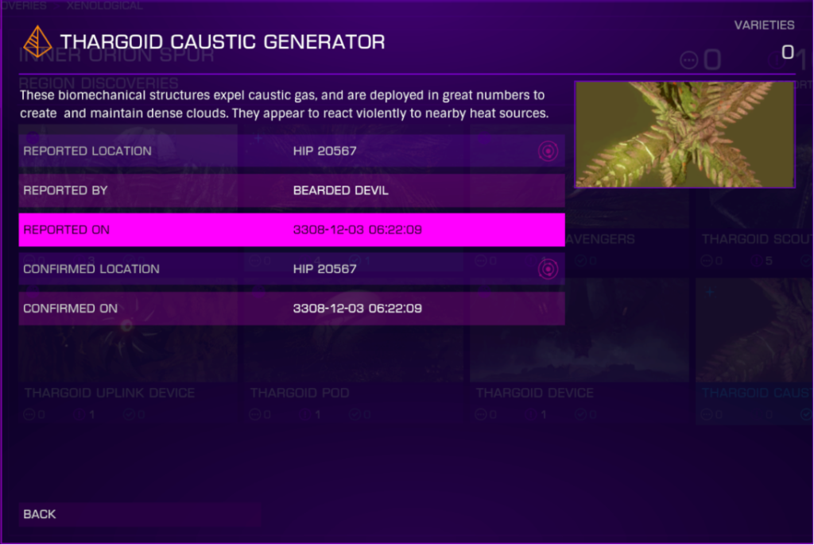

The UIA’s now formally known as the Thargoid Maelstroms have begun taking up residence in the bubble around ammonia worlds. As everything is ramping up in the thargoid war, it seems there is a lot to look at in and around the maelstroms themselves. These curious biological plant like creatures/ships known as Caustic generators float around the maelstrom periodically expelling caustic gasses (on what appears to be a random timer) that will start damaging your ship until you either use a decontamination limpet or burn it off by exceeding 200% heat. Some move back-to-back while/ others remain relatively still. They are avoidable by remaining below 20% heat at a minimum, as this hampers their detection range and prevents them from detonating. However, even a ship with 0% heat (Silent Running) will provoke the charging of the detonation at a range under 300m. Since they are so cold, good sensors (A rating) are recommended to help in spotting them before it is too late. The caustic generators do seem to use this same gas as a propulsion system and you can still be affected if you run into it. These caustic generators seem to be the main line of defense in the maelstrom aside from the blast the maelstrom uses when you are too close.
Caustic Tissue Samples can be obtained from the generator by using Research Limpets (also available as part of the Xeno Multi Limpet controller). You will also need a Xeno Scanner. Approach the generator until you can scan it with the Xeno Scanner, then after the scan the left nav panel will allow access to the fourth tab (similar to scanning limpet points on megaships) where you can select the limpet point and fire off the research limpet.
Thanks to CMDR Bearded Devil, CMDR Firehawk894, and CMDR Dja for help putting together this information.
